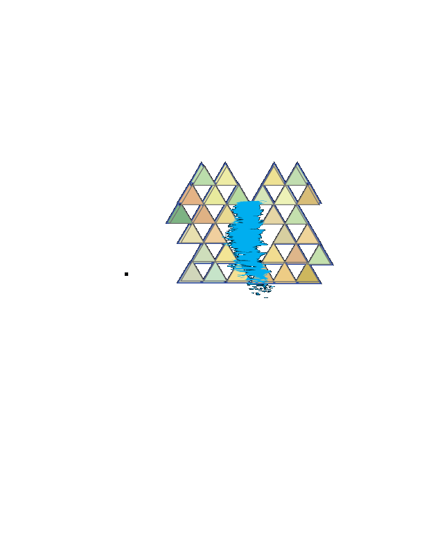
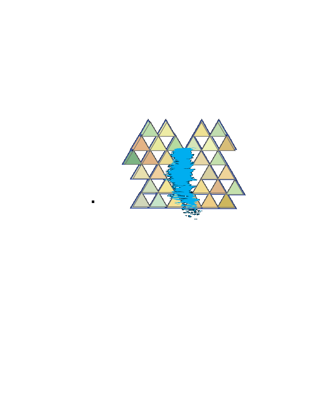

1992


Malcolm James McCormick was born on January 19, 1992, in Point Breeze, Pittsburgh, Pennsylvania.
1992
He was the son of Karen Meyers, a photographer, and Mark McCormick, an architect, and had an older brother, Miller. His mother is Jewish, and his father is Christian.
1992
'07-'09

Miller originally went by the name Easy Mac and released the mixtape 'But My Mackin' Ain't Easy' in 2007 at the age of 15.
2007

He was the son of Karen Meyers, a photographer, and Mark McCormick, an architect, and had an older brother, Miller. His mother is Jewish, and his father is Christian.
1992
'10-'11


Miller signed with the independent label Rostrum Records in July 2010, in the lead-up to his mixtape 'K.I.D.S.', 'K.I.D.S.' was released by Rostrum in August 2010
2010
XXL featured Miller in its annual "Freshman Class" list of 2011. Miller released his fifth mixtape, Best Day Ever, in March 2011. Also in March 2011, he released a six-track EP, On and On and Beyond.
Miller's debut studio album, Blue Slide Park, released on November 8, 2011. With 144,000 first week sales.
2012